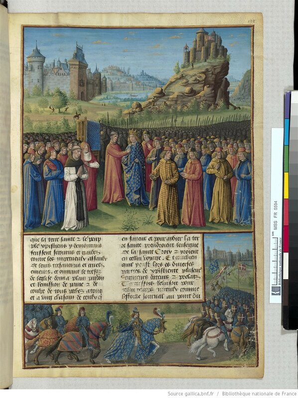
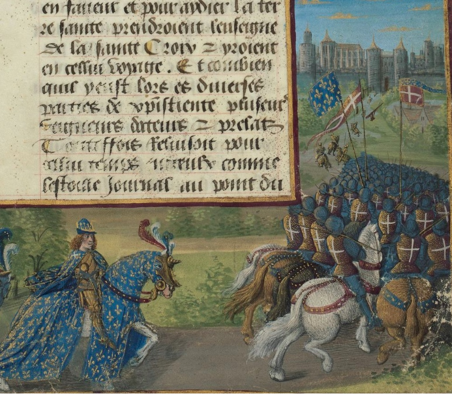
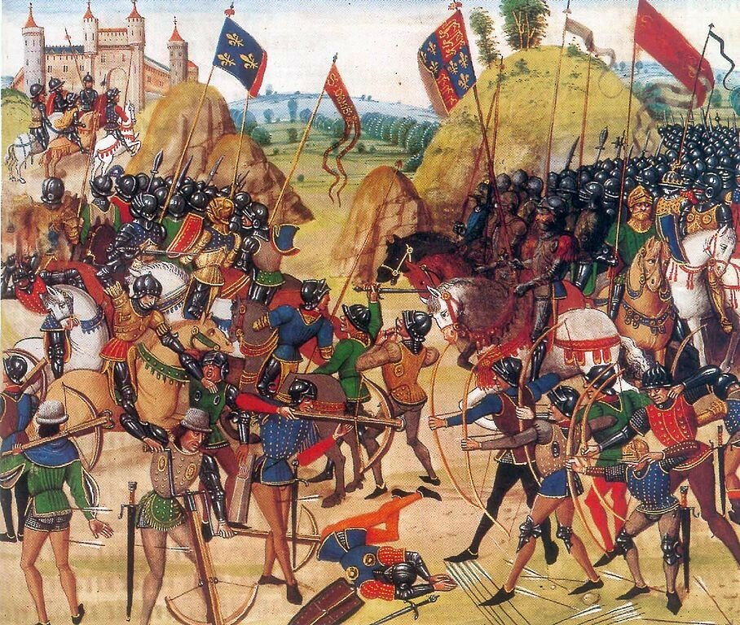
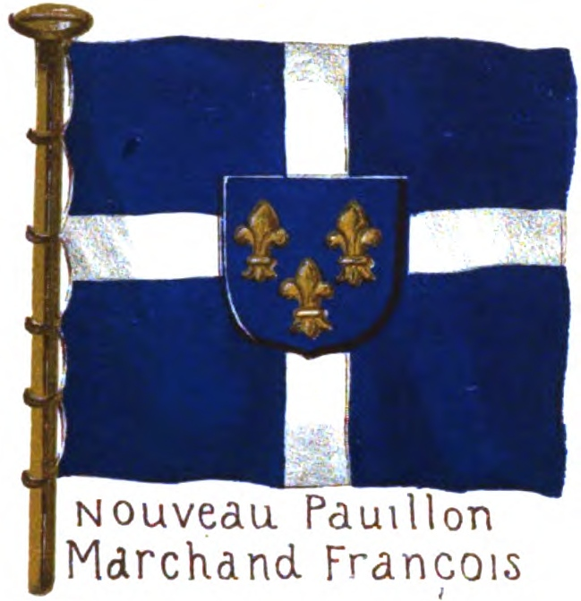
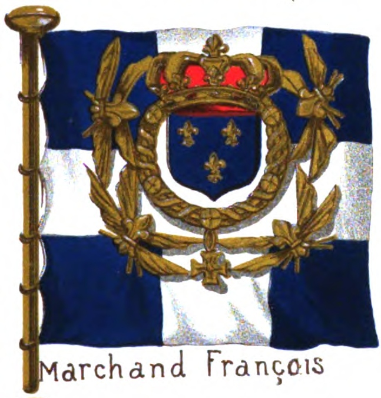
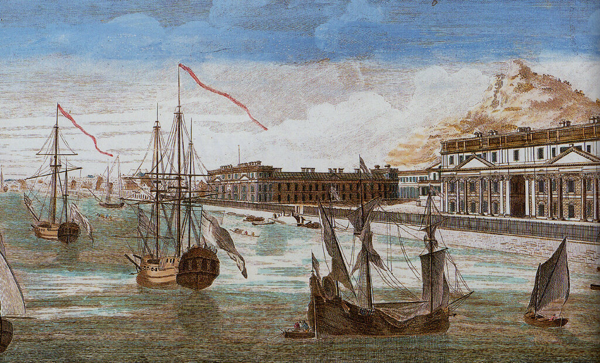
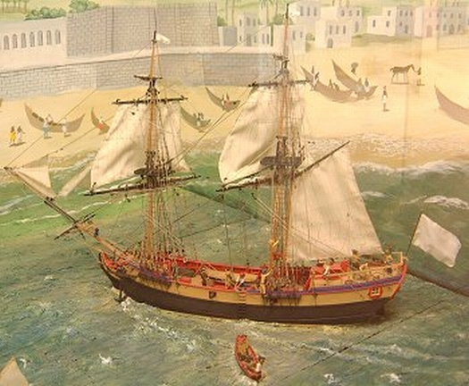

Французский купеческий флаг (окончание)
Итак, выше мы довели рассказ о французских морских флагах до начала XVI века. Но именно в шестнадцатом столетии произошли те военно-политические события, о которых наш основной рассказ: Франция стала практически монопольным представителем Западной Европы в водах Османской империи и защитником интересов католического христианства на подконтрольных туркам территориях. Как это произошло – тема нашего следующего поста, сейчас же завершим историю французского морского флага, получившего беспрецедентную роль на Средиземном море.
Мы знаем, что первым известным нам флагом Франции стал флаг (первоначально хоругвь, орифламма), представляющий собой золотые лилии, рассеянные по лазурному фону.

Людовик VII принимает крест (об этой процедуре мы писали в прошлый раз) в Везле в присутствии св. Бернара и епископа Версаля. Миниатюра из рукописи «Passages faits outre-mer par les Français contre les Turcs et autres Sarrazins et Maures outre-marins », (около 1490), автор Sébastien Mamerot. (Bibliothèque nationale de France, Париж.)
На этой же миниатюре мы видим, что флаг с лилиями соседствует с отличительным флагом Франции в крестовых походах – белым крестом на красном фоне.

Позже французский король Карл V (1364-1380) сократил число лилий на флаге до трех (символ Святой троицы).

Битва при Кресси (Bibliothèque nationale de France (FR 2643, fol. 165v). Битва произошла в 1346 году, так что художник, нарисовавший флаг с тремя лилиями, поторопился.
Флаг с тремя лилиями фигурировал в различных кампаниях французско армии и флота вплоть до Людовика XVIII (1814-1824). Но мы знаем, что параллельно в армии и на флоте использовался флаг с белым крестом. Особенно на кораблях торгового флота.


Однако в 1627 году кардинал Ришелье ликвидировал французское адмиралтейство, присвоив себе титул grand maître, chef et surintendant général de la navigation et commerce de France. Как все у Ришелье, это нововведение происходило под предлогом укрепления власти короля. Поэтому в качестве морского флага при новом адмирале (пост адмирала Франции был тоже ликвидирован) стало использоваться белое полотнище, флаг цвета французских королей. В 1643 году на белое поле флага поместили золотые королевские лилии, а затем в центре флага появился герб Франции, поддерживаемый двумя ангелами. В 1661 году произошло наконец-то документальное закрепление сложившейся практики в королевском ордонансе. Нести чисто белый флаг стало привилегией кораблей военного флота королевства. Что касается кораблей торгового флота, то декретом 1689 года им был назначен флаг с белым крестом на синем фоне (см. выше). Иногда в центре этого флага размещали французский герб.
Но для всего мира цвет французского флага оставался белым, поэтому сложившаяся практика была закреплена королевским ордонансом от 25 марта 1765 года, которым для всех торговых компаний Франции вводился белый флаг

Склады la Compagnie des Indes в Пондишере (Lorient, musée de la Compagnie des Indes)

Двухмачтовое судно (senau) водоизмещением 100 тонн, которое очень широко использовалось французскими торговыми компаниями la Compagnie des Indes)
Отвечая на поставленный в начале этой темы вопрос: под каким же флагом ходили все иностранные торговые суда в Восточном Средиземноморье в XVI веке, мы можем теперь сказать – под белым. А документально это попытаемся подтвердить в наших последующих постах.